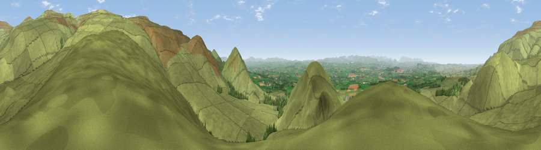

Flagdaw
#6479 in England · top 19% of its area beats it · near MilburnThe view, rendered

A 360° render of this exact spot computed from the terrain model, tree cover and land cover — summer colours, afternoon light, calibrated against photographs of famous viewpoints. Real trees, hedges and buildings will differ in detail.
The panorama
Grey silhouette: terrain skyline in each direction (720 bearings, Earth curvature and refraction included). Dashed green: skyline with trees (+15 m) and buildings (+8 m) as obstacles. Blue strip: how far the ground is visible on each bearing.
Where the view opens
Wedge length = distance to the farthest visible ground on that bearing (vegetation-aware). Rings at 10, 25 and 50 km.
What fills the view
95% grassland · 3% woodland · 2% cropland
Angular shares of the visible panorama (visual magnitude), not map area. Landscape diversity 0.11 (0–1 Shannon).
Key numbers
More beautiful places nearby
The staircase of upgrades: each row has a higher view potential than everything closer. Driving times are estimates from straight-line distance, calibrated against real road routing — check an actual route before setting out.
| Place | Direction | Drive | Score |
|---|---|---|---|
| Knock Pike | SW · 1 km | ~3 min | 71.3 |
| Brownber Hill | SE · 2 km | ~5 min | 72.2 |
| Dufton Pike | SSE · 2 km | ~6 min | 73.7 |
| Great Dun Fell | NNE · 4 km | ~9 min | 77.8 |
| Little Dun Fell | NNE · 4 km | ~10 min | 78.4 |
| Cross Fell | N · 5 km | ~12 min | 78.7 |
| Viewpoint near Plumpton | WNW · 19 km | ~32 min | 78.9 |
| Viewpoint near Watermillock | WSW · 24 km | ~39 min | 82.6 |
54.65446, -2.48219 · source: dobih hill · position refined by local search. Computed location — check access rights before visiting.